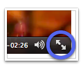

Flashless
Ein WebKit-Plugin, das eine Vorschau für Flash-Video-Dienste anzeigt und den Rest blockiert.
Ein WebKit-Plugin, das eine Vorschau für Flash-Video-Dienste anzeigt und den Rest blockiert.
Erfordert Mac OS X 10.5 oder 10.6, einen WebKit-Browser (z.B. Safari).
Um Flashless zu deinstallieren, beenden Sie Safari, bewegen Sie „Flashless.webplugin“ aus „/Library/Internet Plug-Ins“ in den Papierkorb und starten Sie Safari neu.
Flashless funktioniert weder mit OS X Lion noch Safari 5.1 auf Snow Leopard.
Seit OS X Lion bzw. Safari 5.1 auf Snow Leopard laufen alle Plugins in einem eigenen Prozess, um die Stabilität und Sicherheit zu erhöhen. Leider ist das mit der Art von Plugin, die Flashless benutzt, nicht möglich. Diese so genannten Cocoa-WebKit-Plugins gelten jetzt als veraltet und werden nicht mehr funktionieren.
Es müsste komplett als Safari-Extension oder Netscape-Typ-Plugin neugeschrieben werden. Wegen fehlender Zeit wird das nicht so bald passieren.
Grundlegende Funktionen (Blockieren, Abspielen, Entfernen) sind bei allen Flash-Elementen auf jeder Webseite verfügbar.
Vorschau, Download und Gehe zum Original funktionieren allerdings nur bei bestimmten Seiten. Folgende Video-Dienste werden derzeit unterstützt:
| Dienst | Ansehen | Vorschau | Download | Zum Original gehen |
|---|---|---|---|---|
| Blip.tv | ✓ | ✓ | ✓ | ✓ |
| Flickr | ✓ | ✓ | ✓ | ✓ |
| Google Video | ✓ | ✓1 | ✓1 | ✓ |
| Tumblr | ✓ | ✓ | ✓ | – |
| TwitVid | ✓ | ✓ | ✓ | ✓ |
| Viddler | ✓ | ✓ | – | – |
| Vimeo | ✓ | ✓ | – | ✓ |
| XTube | ✓ | ✓2 | – | ✓ |
| YouTube | ✓HD | ✓ | ✓3HD | ✓ |
| Andere Seiten | ✓ | – | – | – |
1) Nur auf ursprünglicher Seite verfügbar. Siehe „Bei ‚…‘ anzeigen“ im Menü.
2) Nicht für alle Videos verfügbar.
3) Seit Flashless 2.0.7 sind YouTube-Downloads wieder möglich!
Bei allen Diensten bei denen der Download unterstützt wird, kann man das Video auch ohne Flash abspielen.
 Ja. Bei Flashless in Safari 5 unter Mac OS X Snow Leopard, können Sie Videos von unterstützen Diensten im Vollbild abspielen.
Klicken Sie einfach auf den Doppelpfeil unten rechts im Video.
Manchmal öffnen sich Videos von YouTube im Browserfenster, anstatt heruntergeladen zu werden. Falls das passiert, klicken Sie in die Adressleiste und drücken Sie bei gehaltener Wahltaste die Eingabetaste um den Download zu starten.

Stellen Sie sicher, dass Sie Flashless 2.0.7 oder neuer verwenden.
Obwohl die meisten Seiten problemlos mit Flashless zusammenarbeiten, können gelegentlich Probleme auftreten.
Möglicherweise treten bei der Verwendung von einigen Facebook-Apps (z.B. Farmville) Probleme auf.
Um diese zu beseitigen, führen Sie folgende Schritte aus:
defaults write de.uselessness.Flashless UCWhitelist -array-add "static.ak.fbcdn.net"
Die Facebook-Apps sollten nun funktionieren.
Flashless ist ein Open-Source-Projekt auf GitHub. Beiträge zum Projekt sind willkommen.
Ältere Versionen sind dort ebenfalls zu finden.
{kind=link}